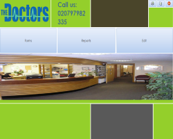

Unit 10: Database Development
Tables

This is a small sample of the altogether 50 records contained within my patient table, the patient table you see before consisted of many fields, all relevant to the scenario, such as Patient ID, Gender etc, because I was building a relational database this, hoverer, wasn't the only table in the project, instead, there were two others (three in total) the patient table that you see, a separate doctors table and the appointments table that formed the relationship tying the other tables together.
Main Menu
This was the main menu for my database, from this screen each and every function I created could be accessed and performed, I also created several sub menus that were consistent with the design of the main menu. One such form allowed users to access the different types of forms, another let them view the major reports, there was also the option to view the 'queries switchboard' an independent menu (with similar design) that allowed users to run the various queries.
Forms

This is an example of one of the three tabular forms that I created for the database, It organised the fields and lables across several pages so that each field was not only easier to locate but easier to look at (Design) There were also two other forms not shown here, one for each table, these were the Doctors form that allowed users to update add new information on doctors and the appointments form that did the same thing for the many appointments in the database.